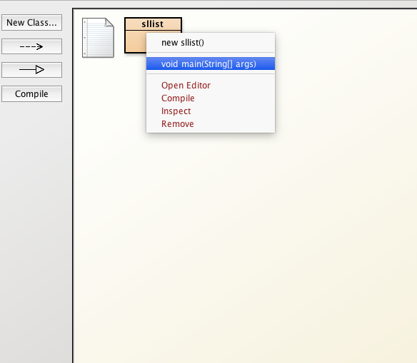
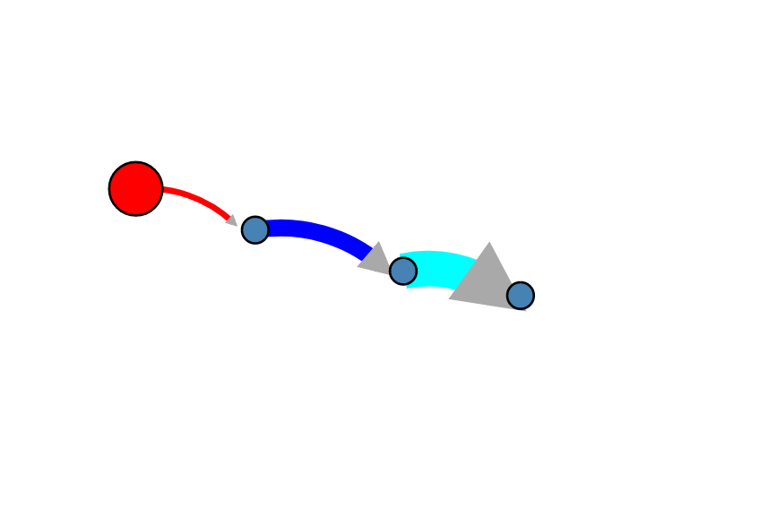

Step 1: Install BlueJ
- If you do not have BlueJ
installed, download it from the
BlueJ site
and install it on your computer.
- BlueJ requres Java JDK to be installed, else you will
get the error "BlueJ could not find any Java systems.
A JDK must be installed to run BlueJ."
Verification: Open the BlueJ application and you should see
the main object window.
|
Step 2: Create Bridges Account
- Visit the Bridges
main page
and create yourself an account by clicking the login button
on the top navigation bar. Please ensure that
your user id is devoid of spaces, as it will be
used as part of the web link for your projects.
After creating your account, click
on your profile name in the upper right corner to
view your profile. Once in your profile,
you will see your
API Key; you will need this API key in part 2
of the tutorial(as well as in every BRIDGES program
you write). NOTE: Make sure to remember
your password. There is no password recovery option,
and you can only have one account per email address.
|
Step 3: Create a Java Project
- Open Project-->New Project
- Follow the Project menu directions and create a project
at a convenient location. This will create a new folder
on your drive.
- Example on right shows a class named sllist that
has been created.
|
|
Step 4: Create a Bridges Program
- We will illustrate a Singly Linked List Bridges program
here - for more details of this program, refer to the
User Guide /Tutorials
that provides fully documented Bridges examples for each
data structure.
- You may add the BRIDGES program to sllist
created in Step 3 or by
choosing Edit-->Add Class from File and
importing the class from a file.
- Put in your BRIDGES credentials into the first statement of
the program; they should both be strings.
|

|
Step 5: Import Jar File into project
- Download the Bridges.jar file from
this link and save it somewhere convenient
on your drive.
- On BlueJ, follow BlueJ-->Preferences and select the Libraries tab;
- Click the Add File button, to add the downloaded BRIDGES
Jar file. You will need to restart BlueJ for the library to
be loaded!
| 
|
Step 6: Compile and Execute Bridges
Program
- To compile a class, click on the Compile button
on the text editor.
- To compile the whole project, click on the
Compile button on the project window
- To execute the program, right click on the project and
select(execute) the main() function.
- On the console window, the user will be pointed to a
web link for viewing the visualization of the
singly linked list.
|

|
Step 7: Visualization
- If your program compiles and executes without errors
the weblink points to a visualization of your data
structure.
- Paste this link in your browser and see the result.
- Your visualization should something like this.
- You can do limited interactive operations on the
display window - move the nodes, mouse over to see labels, move the entire visualization, etc.
|

|